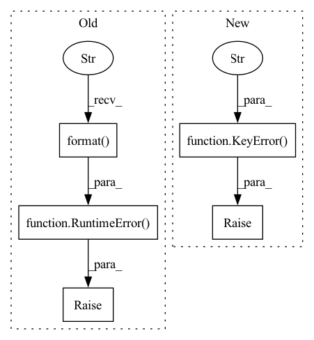

Pattern ID :17481

Before Change
self.group_service_lut.pop(key)
else: // pragma: no cover
// should never happen
raise RuntimeError(
"Failed to deregister service with key "{}" "
"from Group [{}], executor is Process[{}]".format(
key, self.group_name, get_cur_name()
)
)
def is_registered(self, key: Any):
Check whether a service has been registered in the current group.
After Change
``KeyError`` if srvice has not been registered.
if key not in self.group_service_lut:
raise KeyError(
f"Service with key "{key}" not registered "
f"in Group [{self.group_name}] "
f"on Process[{get_cur_name()}]"
)
// announce the deregistration
status = rpc.rpc_sync(
get_world().lut_manager,
_rpc_unset_lut_entry,
In pattern: SUPERPATTERN
Frequency: 3
Non-data size: 5
Instances
Fragment ID: 57930838
Project Name: iffix/machin
Commit Name: 6d2f5dd00f170cf0f6e5e9337e711039774088e7
Time: 2021-03-30
Author: hanhanmumuqq@163.com
File Name: machin/parallel/distributed/world.py
M Class Name: RpcGroup
N Class Name: RpcGroup
M Method Name: deregister(2)
N Method Name: deregister(2)
M Parent Class:
N Parent Class:
M File Name: machin/parallel/distributed/world.py
N File Name: machin/parallel/distributed/world.py
M Start Line: 758
M End Line: 777
N Start Line: 752
N End Line: 771
'>
Before Change
self.group_value_lut.pop(key)
else: // pragma: no cover
// should never happen
raise RuntimeError(
"Failed to unpair value with key "{}" "
"from Group [{}], executor is Process[{}]".format(
key, self.group_name, get_cur_name()
)
)
def is_paired(self, key: Any):
Check whether a key has been paired to the current group.
After Change
``KeyError`` if value has not been paired.
if key not in self.group_value_lut:
raise KeyError(
f"Value with key "{key}" not paired to Group [{self.group_name}] "
f"on Process[{get_cur_name()}]"
)
// announce the unpairing
status = rpc.rpc_sync(
get_world().lut_manager,
_rpc_unset_lut_entry,
'>
Fragment ID: 57930837
Project Name: iffix/machin
Commit Name: 6d2f5dd00f170cf0f6e5e9337e711039774088e7
Time: 2021-03-30
Author: hanhanmumuqq@163.com
File Name: machin/parallel/distributed/world.py
M Class Name: RpcGroup
N Class Name: RpcGroup
M Method Name: unpair(2)
N Method Name: unpair(2)
M Parent Class:
N Parent Class:
M File Name: machin/parallel/distributed/world.py
N File Name: machin/parallel/distributed/world.py
M Start Line: 650
M End Line: 669
N Start Line: 646
N End Line: 663
'>
Before Change
for node in self.get_all_nodes():
if node.name == node_name:
return node
raise RuntimeError("There is no node with the name {}".format(node_name))
def get_model_inputs(self) -> List[ValueInfoProto]:
Returns model inputs.
After Change
try:
return self.lookup_nodes[node_name]
except KeyError as e:
raise KeyError(f"There is no node with the name {node_name}") from e
def get_model_inputs(self) -> List[ValueInfoProto]:
'>
Fragment ID: 57930836
Project Name: openvinotoolkit/nncf
Commit Name: 3573aaf1d90856f3954a49044d253777acf45649
Time: 2022-07-12
Author: vinnam.kim@intel.com
File Name: nncf/experimental/onnx/graph/onnx_graph.py
M Class Name: ONNXGraph
N Class Name: ONNXGraph
M Method Name: get_node_by_name(2)
N Method Name: get_node_by_name(2)
M Parent Class:
N Parent Class:
M File Name: nncf/experimental/onnx/graph/onnx_graph.py
N File Name: nncf/experimental/onnx/graph/onnx_graph.py
M Start Line: 49
M End Line: 52
N Start Line: 63
N End Line: 68